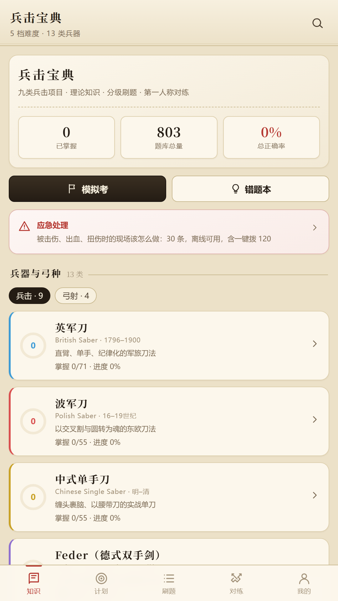
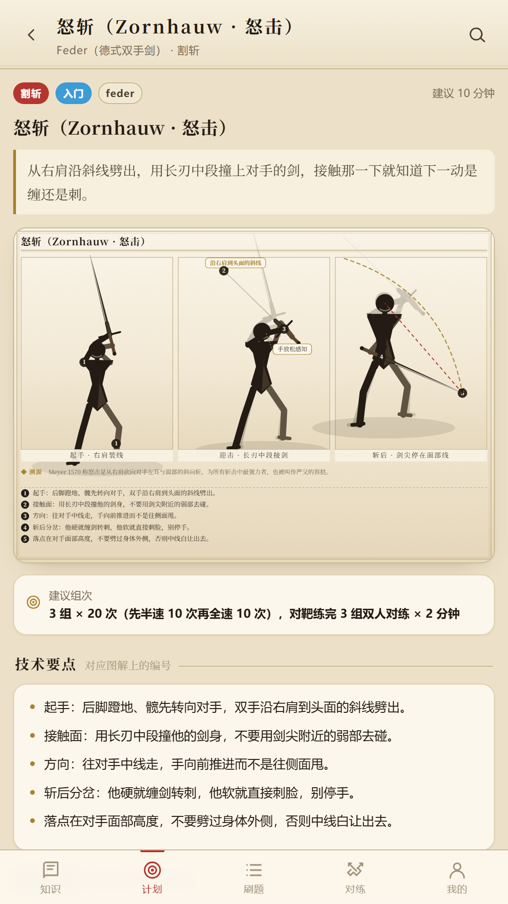
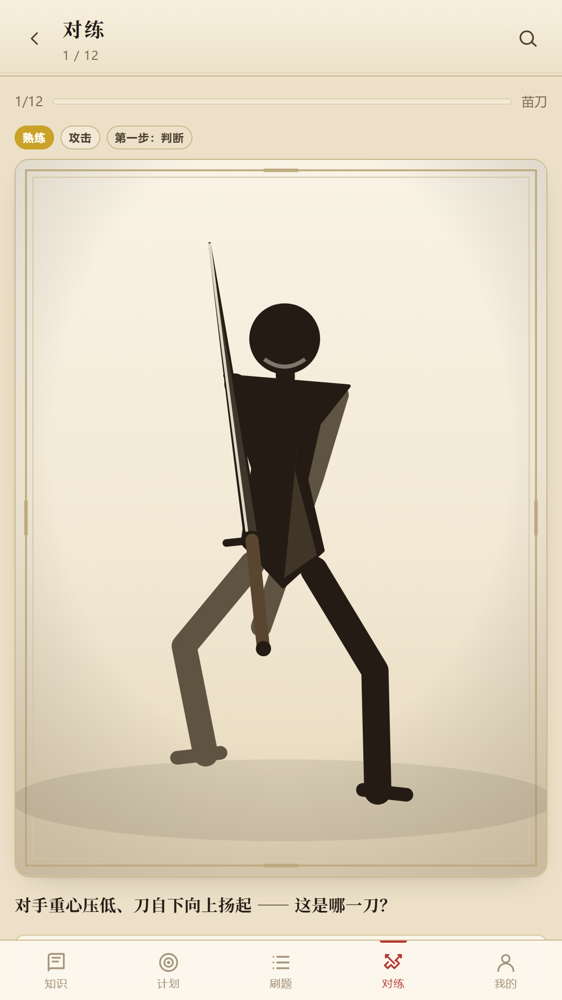
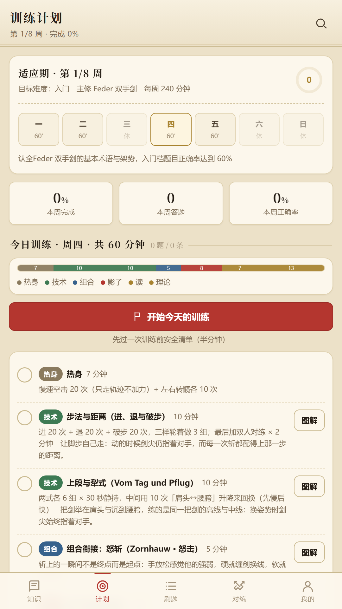
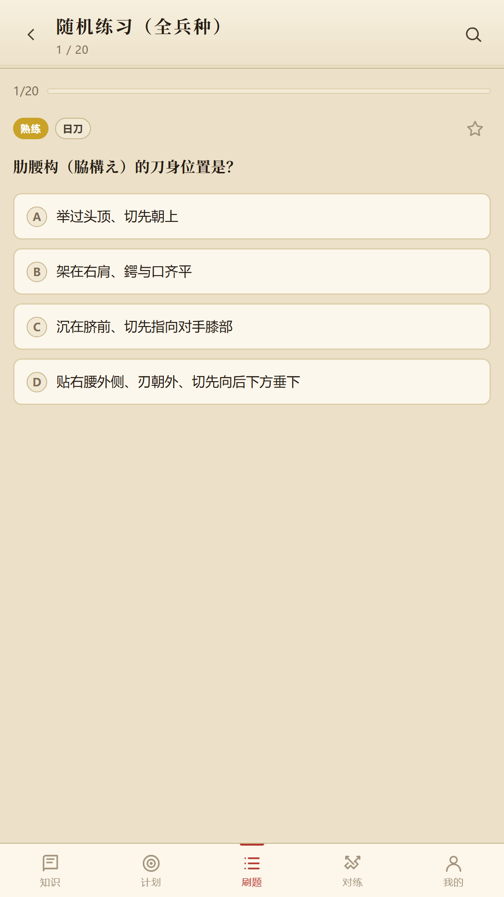
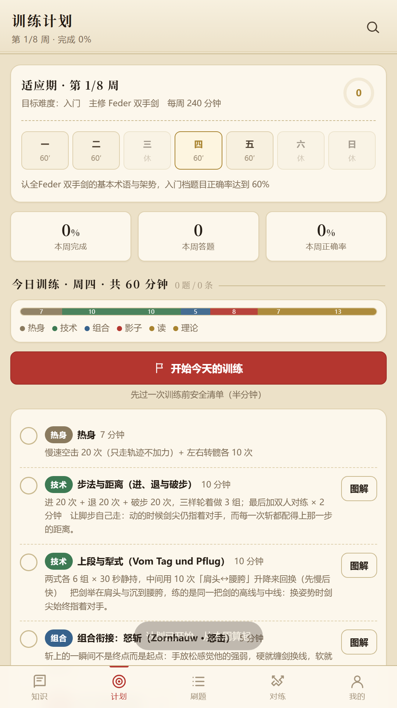

兵击宝典
兵击与射箭 · 理论 · 图解 · 训练计划
下载 APK（V1.2.0）
Android 7.0 及以上 · 约 4.7 MB · 完全离线
安装提示：安卓会提示「未知来源应用」。这是因为本应用没有上架应用商店 ——
点「仍要安装」即可。安装包是开发者签名的原包，未经过任何第三方。
这是什么
面向兵击（历史武术竞技）与射箭练习者的理论学习与训练工具。所有内容随安装包离线分发，
不注册账号、不收集任何个人信息、不集成任何第三方 SDK。
260知识点
803练习题
156技术动作（带图解）
13兵器与弓种
主要功能
- 知识库：260 条知识点，支持中英文与术语检索，每条标注文献出处
- 分级刷题：803 道题，五档难度，含模拟考、错题本与掌握度统计
- 第一人称对练：108 个动作识别训练，判断对手起手式并选正确应对
- 技术动作库：156 个动作，多格分镜图解 + 编号技术要点 + 动作衔接 + 历史溯源
- 训练计划：几个问题生成 6–10 周计划，每日时间切成五个环节
- 语音跟练：逐句念口令（「剑柄离头顶约一拳」「与地面约四十五度」），念一句停一下
- 应急处置：30 条现场处置，一键拨 120、急救信息卡、训练前安全清单
覆盖项目
| 兵击九类 | 英军刀 · 波军刀 · 中式单手刀 · Feder 双手剑 · 迅捷剑 · 剑盾 · 苗刀 · 日刀 · 大枪 |
| 弓射四类 | 传统弓 · 美猎（光弓）· 竞技反曲 · 复合弓 |
截图






安全提示
器械对练与射箭具有受伤风险。请务必佩戴符合标准的护具、使用专用训练器械，并在安全的场地进行。
本应用内容为学习参考，不能替代持证教练的现场指导；「应急处置」为现场应急参考，
不能替代专业急救培训与医疗判断。紧急情况请立即拨打 120。